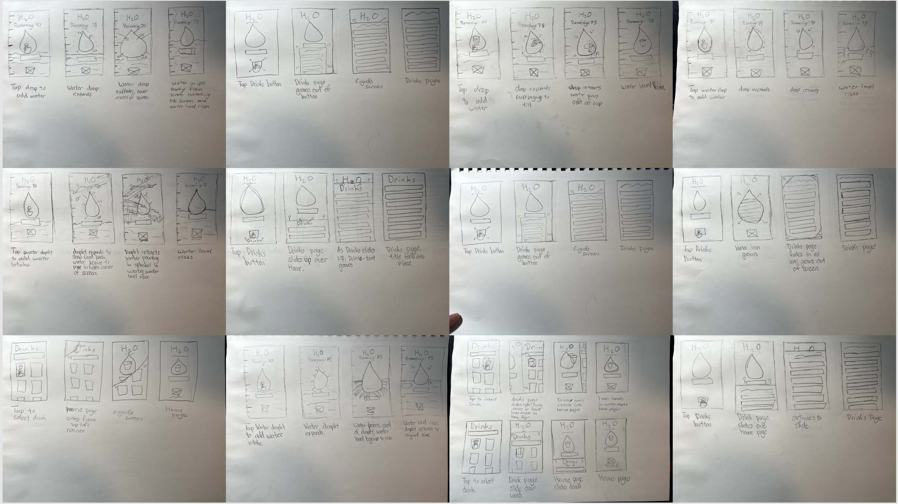

The purpose of my third and last UXID project involved learning about effective interaction design, particularly IX design in adobe after effects. My first two classes, in which I worked on the Jervo.org redesign, taught general UX and UI theories and concepts as well as introduced Figma. The H2Organizer project involves those learned skills as well as IX design.
I chose to design a water tracker app for its simplicity. I wanted to master Interaction Design and didn't want to overwhelm myself with designing and mapping out an overly complex app.
This project was my introduction to the world of UX and UI. It was a learn-as-you-go kind of deal.
To no surprise, there is a wide variety of water tracker apps in the app store. What came as more of a surprise was the lack of good ones. What I saw were way overly complicated and thus overwhelming apps. These are one-task apps, they should be as intuitive and simple as it gets.
The Problems:
Simplicity is the name of the game here. In creating my wireframes I wanted designs that allowed for comprehensive interactives and straight a straight forward task-flow.
Design Goals:
My initial wire flow was my first chance to showcase the simple task flow I wanted to implement. The task flow can be achieved in 1-4 clicks.

Designing some quality animations for my app was one of the main goals of this project. I wanted some light and fun animations that rewarded the user for completing certain tasks within the app. Additionally, I wanted my interactives to contribute to the simplicity and intuitiveness of my app.
